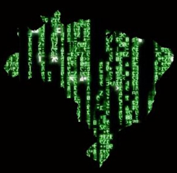

import porque.competir.*(){
i++
Por: Fellipe Augusto Alves Gurgel

Desafio de Programação
[Fonte: Computer Science Society]
Competir... Por quê?
Quem não quer conseguir um estágio para ganhar R$1000,00, mais benefícios por mês, para ser incentivado a tirar de 4 a 6 certificações? Quem não quer ter uma oportunidade em grandes empresas, as quais encontraram nas Maratonas de Programação um atalho aos grandes talentos da computação?
O simples fato de competir usando sua habilidade de resolver problemas em linhas de código chama a atenção das grandes empresas, não só as interessadas nesse mercado. E convenhamos que, se tratando do poder da programação, quem não estaria, certo?
Se as empresas valorizam tanto tais profissionais é porque eles acabam desenvolvendo grandes diferenciais ao se prepararem para competir. Dentre as características que mais chamam a atenção nos competidores estão:
-
Criatividade: resolver um problema das Maratonas exige que o competidor esteja atento às pequenas dicas que podem ser cruciais para a solução. Usando a criatividade ao desenvolver, a resposta pode se tornar mais intuitiva;
-
Foco: como em qualquer competição, sem foco, a equipe pode perder tempo e não concluir a maratona em tempo hábil. Logo, este aspecto deve ser treinado cautelosamente, trabalhando sempre o psicológico dos participantes;
-
Raciocínio rápido: inconscientemente esta característica se torna parte do competidor, pois é de grande importância que cada solução seja pensada rapidamente, afinal é uma competição;
-
Resoluções objetivas e determinação: não há enrolação nas respostas, há sempre resultados, mesmo que errados. Os competidores devem continuar tentando, mesmo que a solução que eles pensaram estiver errada;
-
Detalhista: em Maratonas, também se torna extremamente importante prestar atenção aos detalhes, pois uma resposta pode ter sido considerada errada por conta disso, visto que o formato da competição é estritamente rigoroso no que diz respeito a maneira que a informação é manipulada;
-
Trabalho em equipe: como, geralmente, a competição é por equipes, se não houver um grande fluxo de colaboração entre os membros, dificilmente estes ganharão algum prêmio;
-
Rendimento sob pressão: os participantes se tornam psicologicamente fortes se tratando de prazos e pressão. Ao ver que outras equipes resolveram mais problemas, o tempo está acabando, gente gritando, equipes ficando loucas, se eles não mantiverem controle sob suas atitudes, podem colocar tudo a perder;
-
Paixão pelo que faz: apenas crianças competem a pedido dos pais. Aos competidores é extremamente gratificante completar um exercício das Maratonas e essa paixão por competir e conquistar que os motiva a continuar tentando, continuar programando;
-
Auto-Confiança: o maratonista de programação cresce a cada resposta correta, essa incrível sensação eleva o ego e a confiança dele e da equipe. Além deles saberem o quanto as pessoas, principalmente as empresas, precisam e os admiram pelas suas habilidades;
-
Paixão por desafios: assim como um atleta, o programador quer sempre quebrar novas barreiras e superar seus limites;
-
Motivação: o que o competidor quer é solucionar aquele problema, crescer pessoal e profissionalmente; fazer a diferença; e acaba tornando cada problema um objetivo. A vontade de vencer é automática e a capacidade de tornar tudo um desafio o enche de motivação;
-
Aprender rápido: a prática de programar acaba o tornando um autodidata, que conhece seus limites e suas dificuldades, e tenta os desenvolver não como uma fraqueza, mas como um desafio a ser conquistado, um objetivo a ser alcançado. A determinação e o foco os auxiliam para aprenderem rápido;
-
Precisão: não há porque ficar dando tanta importância aos erros quando o que os competidores querem é acertar. Logo, os maratonistas se tornam precisos e mais uma vez, objetivos;
-
Otimização de códigos: depois de tudo, a mentalidade que os competidores desenvolvem faz com que as grandes empresas os busquem para otimizar códigos, pois a agilidade e a objetividade das resoluções são mais otimizadas e enxutas do que se tivessem sido feitas por um programador que não tem experiência com Maratonas.

[Fonte: Algar Tecnologia]
Repare que as palavras agilidade, rapidez e precisão, são bem comuns quando estamos tratando de qualquer competição.
Em Maratonas de Programação competimos intelectualmente, mas não podemos deixar de considerar a agilidade e a precisão das respostas e dos treinamentos. Logo, os competidores acabam tendo exatamente o perfil do funcionário perfeito que as grandes empresas querem: ágeis e precisos, ganhando todos os diferenciais acima.
E aí, vamos descobrir como?
Referências:
}